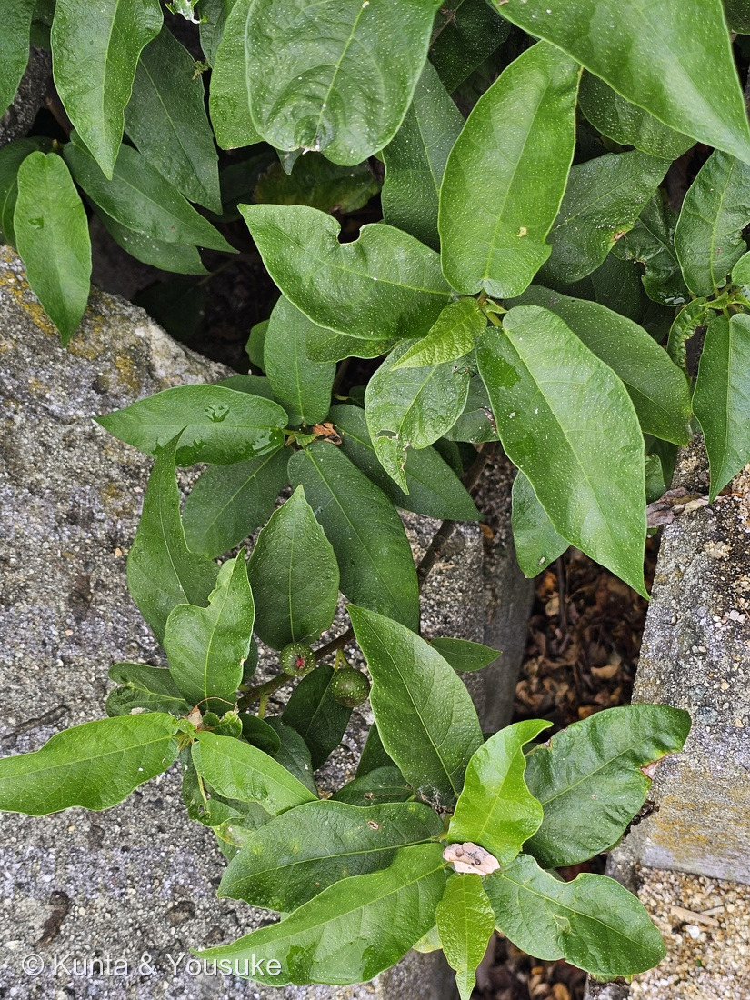
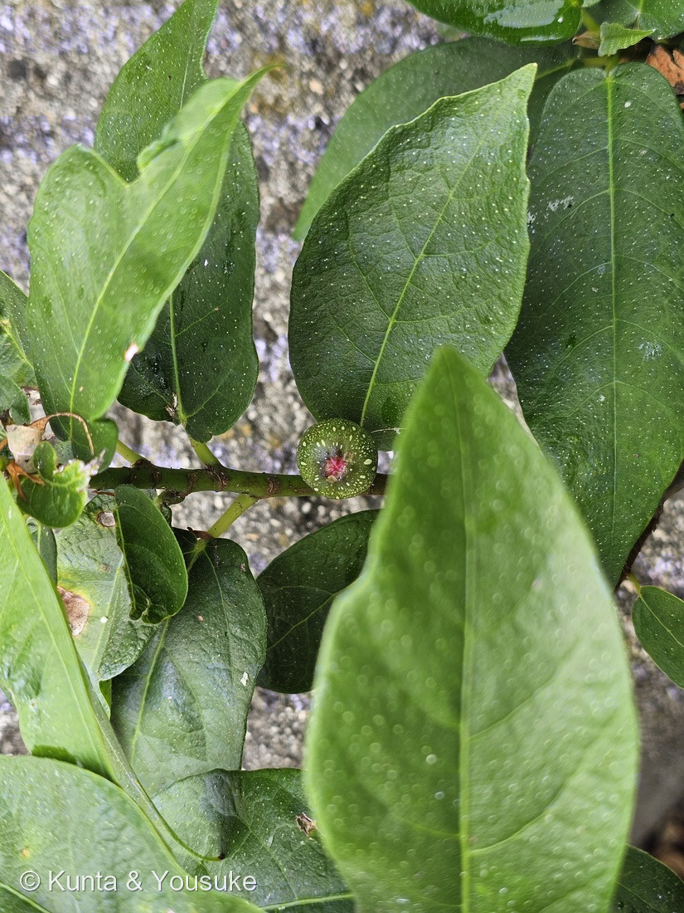
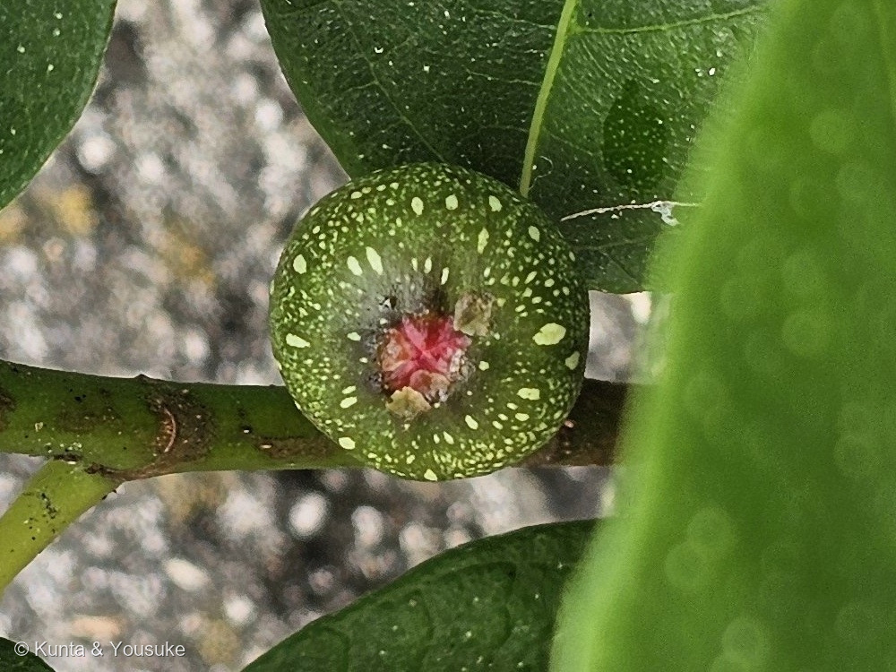
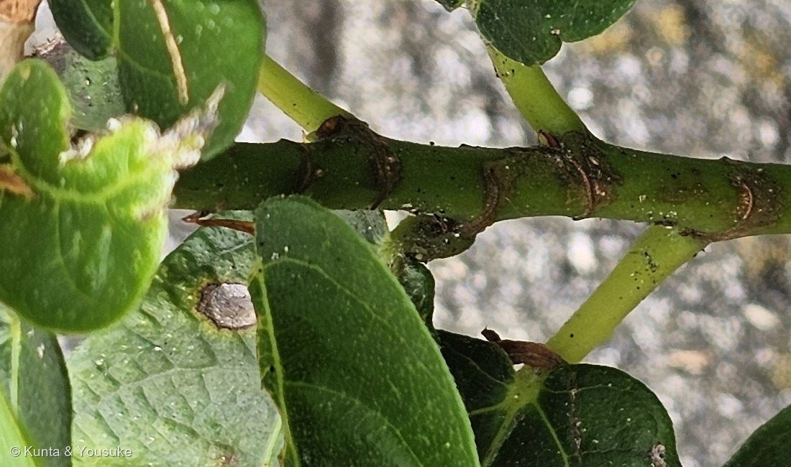
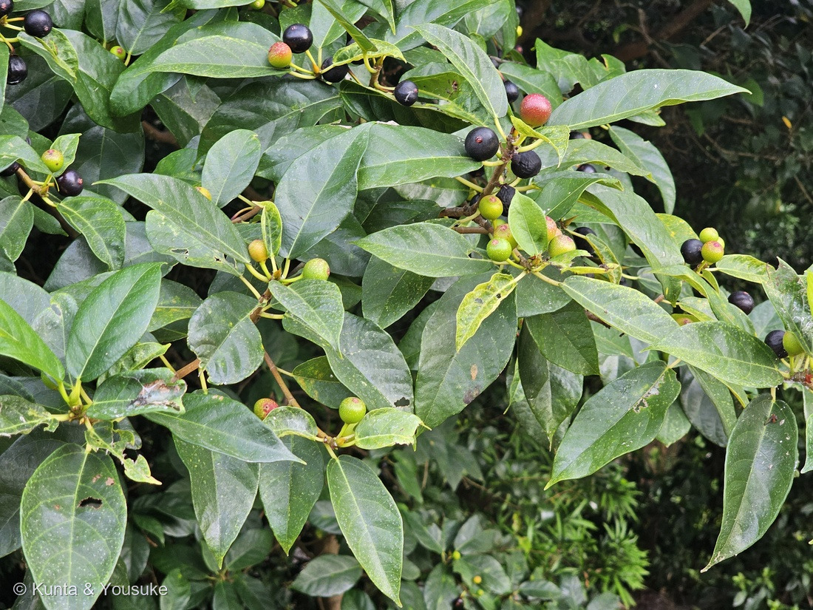

地図を読み込んでいるよ…
🔍 写真も地図も、押しているあいだ拡大して見られるよ（スマホは指を置いてすこし待ってね）。
🌍 の地図＝この子がもともと自生している場所を緑に。日本の本州（関東以西）・四国・九州・沖縄と、済州島・中国南部（福建・広東・広西・貴州・湖北・湖南・江蘇南部・江西・雲南・浙江）・台湾・ベトナムの在来種。海岸や沿海の山地にふつうに生える。くわしくは下の地図の説明を見てね。
⭐日本の海べりの子だよ。三河の植物観察は「本州（関東以西）、四国、九州、沖縄、済州島、中国、台湾、ベトナム」、日本語版Wikipediaは「海岸や沿海山地に自生し、特に関東から沖縄の海岸沿い照葉樹林林縁に分布」とする＝⭐だから北海道と東北は塗っていない（⚠「関東以西」なので、北陸や信越の内陸はほんとうより広く見えているかもしれない）。⭐中国は Flora of China の省の一覧どおり＝福建・広東・広西・貴州・湖北・湖南・江蘇南部・江西・雲南・浙江（⚠江蘇は南部だけなのに省ぜんぶが緑）。⚠韓国は「済州島」だけなのに、地図は国ごとしか塗れないので半島まで緑になっている＝ほんとうはいちばん南の島だけ。⭐台湾とベトナムは三河と Flora of China の両方にある。⭐⭐大串海岸の護岸のすきまは、この子の「海岸や沿海山地」そのものだよ。
⚠ 地図は国（日本と中国だけ県・省）までしか塗れないから、ほんとうの分布より広く見えていることがあるよ。地図はだいたいの場所。正確なところは、上の文を見てね。
イヌビワ（犬枇杷）
Ficus erecta Thunb.
別名 · イタビ／イタブ／チチノミ ⭐「イヌ」＝ビワに劣る、erecta＝まっすぐ立つ 中国名 矮小天仙果
クワ科 · Moraceae（イチジク属 Ficus · バラ目 Rosales）── ⭐図鑑で4人目のクワ科（055 イチジク・191 フィカス・ウンベラータ・238 カジノキ）／⭐イチジク属は3人目
燻太さんの言葉「見た目は小さなイチジクだけど、葉っぱの形はフィカスって感じだね。葉にも、花にも白い斑点があるね。果実は、美味しいのかな？」── ⭐3つとも、そのままこのページの節になったよ
⭐⭐⭐⭐⭐ 名前と学名の由来 ── 「ビワに劣る」と「まっすぐ立つ」
- ⭐⭐ 和名「イヌビワ（犬枇杷）」＝実がビワの実に似ていて食べられるけれど、ビワにくらべて味が劣るから（日本語版Wikipedia・植木ペディア・樹木図鑑）。⭐「イヌ」は「劣る・にせの」の意味（日本語版Wikipedia）。
- ⭐⭐⭐ でも、樹木図鑑（jugemusha）はこう書く＝「本当はビワではなく、イチジクと比べるべきだろう」。⭐燻太さんの第一声「見た目は小さなイチジク」は、まさにそこを突いていた。
- ⭐ 神戸市のページには、もうひとつ＝「江戸時代、中国からイチジクが入ってくるまではイチジクと呼ばれていたようです」。⭐つまり、この子のほうが先に「イチジク」の名前を持っていた（⚠「ようです」と書かれているので、僕もそのまま「ようです」で受けとるね）。
- ⭐ 属名 Ficus＝ラテン語で「イチジク（の木）」＝055 イチジクと191 フィカス・ウンベラータと同じ属名。
- ⭐⭐ 種小名 erecta＝ラテン語 erectus「直立した・まっすぐ立つ」。──⭐つる（イタビカズラ）でも、地を這うのでもなく、自分で立つ木＝つるのイタビカズラやオオイタビとならべると、この子の立ち姿はそれだけで名前になる（⭐ラテン語の意味は辞書どおりで、この種にその名をつけた理由までは出典に無かったよ）。
- ⭐ 1786年、ツンベルクの命名（Flora of China「Thunberg, Ficus. 5. 1786」）＝長崎に来た植物学者が、日本の植物として名づけた子。
- ⭐ 別名イタビ（三河）。⭐⭐おまけの「イタビカズラ」は、このイタビに「カズラ（つる）」がついた名前＝つるになったイヌビワの仲間。
⭐⭐⭐⭐⭐ 燻太さんの「小さなイチジク、葉はフィカス」── 見た目が、そのまま分類だった
- ⭐ 燻太さんの言葉＝「見た目は小さなイチジクだけど、葉っぱの形はフィカスって感じだね。」
- ⭐⭐⭐ 答え合わせ＝両方あたり。──イチジク（Ficus carica）も、フィカス・ウンベラータ（Ficus umbellata）も、この子も、同じイチジク属 Ficus。⭐「小さなイチジク」は実（花嚢）が属の顔、「フィカスの葉」は葉が属の顔＝燻太さんは、実と葉の両方で属を当てていた。
- ⭐⭐⭐ そして、写真④の枝の輪＝托葉が落ちた跡（托葉痕）が枝をぐるりと1周する＝⭐イチジク属（クワ科）の目じるし（松江の花図鑑「托葉痕が枝を１周する」・三河のイタビカズラ「托葉が落ちた痕が、茎を1周する托葉痕として残る」）。⭐⭐191 フィカス・ウンベラータの枝先を包んでいた「とがった鞘」＝あれが托葉。落ちたあとに、この輪が残る。
- ⭐⭐ 「実」に見えるものは、花の袋（花嚢・隠頭花序）＝中に小さな花がたくさん咲いている＝「無花果」と書く055 イチジクと同じで、花が見えないのは袋の中で咲いているから。⭐燻太さんが「葉にも、花にも白い斑点」と書いたのは、だから正しい呼び名＝あれは花（の集まり）だよ。
⭐⭐⭐ 「白い斑点」── 葉にも、花にも
- ⭐ 燻太さんの言葉＝「葉にも、花にも白い斑点があるね。」
- ⭐⭐ 写真③＝花嚢の白い点＝緑の玉に、白い点がまばらにちらばる。⭐てっぺんの赤いところは、花嚢の「口」＝Flora of China は「apical pore navel-like（頂の孔はへそ状）」と書く＝⭐イヌビワコバチが出入りする、たったひとつの入口。
- ⭐⭐ 写真②の手前の葉＝葉の面に、まるい点々が浮いて見える＝⭐ぼけているぶん、かえって点の並びがよく分かる。⭐写真①の葉にも、細かい白い点が散っている。
- ⚠ 正直に＝この白い点の名前を、読めた出典の中に見つけられなかった（三河・松江・植木ペディア・Flora of China・Wikipedia のどれにも「白い点」の記述が無い）。⭐神戸市のページの「葉の両面をなぜると少しざらつきます」が、いちばん近い＝⏳手でなでたときの手ざわりを、宿題⑥にしておくね。⭐名前が分からなくても、「点がある」は写真の事実として残しておく。
⭐⭐⭐⭐⭐ 「果実は、美味しいのかな？」── 木の性別と、時期しだい

2026.08.13 夕方・長崎（宿の近くの通路） ⚠大串の株ではなく、1か月前に撮った別の木だよ。🔍 押しているあいだ拡大して見られるよ。
- ⭐ 燻太さんの問い＝「果実は、美味しいのかな？」──⭐⭐答えは「その木が雌株で、10〜11月に黒紫に熟したら、甘い」。
- ⭐⭐⭐ 出典はこう書く＝三河「紫褐色に熟した雌果嚢は直径約1.6（1.4〜1.8）cm、甘く、食べられる。雄果嚢は基部が細長く伸び、硬くてまずい」／植木ペディア「雌株にできる実は微かに甘味があって生食できる…小さな種がたくさん入っているため、ジャムにして食べるのが普通」／六甲山系植生図鑑「食べることができますが、タネがいっぱい詰まっていて、味もさほどおいしくありません」／樹木図鑑「イチジクのようで、甘い」。⭐⭐「甘い」から「さほど」まで、出典のあいだで幅がある＝⭐名前の「イヌ（劣る）」は、その幅の下のほうを言っている。
- ⭐⭐⭐ 鍵は雌雄異株＝雌の木の花嚢だけが甘い実になり、雄の木の花嚢は硬くてまずい。──⭐⭐⭐なぜなら、雄の花嚢はイヌビワコバチの育児室だから。六甲山系植生図鑑の説明がいちばん分かりやすい＝「小さな隙間から雄花に入り込み、その果実の中で産卵します。…運悪く雌花に入ってしまうと、産卵もできず、出ることもできずに、閉じこめられてしまうのです。出よう出ようともがくほど、…花粉をめしべに振りかけていることになり、受粉が行われます」＝⭐⭐「雄花はコバチの育児を、雌花はイヌビワの種子の生産を」。
- ⭐ 写真③の花嚢は、まだ緑で小さい（9月12日）＝熟すのは9月末〜11月（Wikipedia「9月末〜10月ごろに完熟」・三河「果期9〜10月」・植木ペディア「11〜12月頃」＝出典で割れる）。⭐そして、この木が雌か雄かは、この写真では分からない（樹に咲く花「雄と雌の花嚢は同形」）。⚠三河の「雄果嚢は基部が細長く伸び」に照らすと、③の実は柄が短くて丸い＝雌に寄った手がかりではあるけれど、決め手にはしない。
- ⏳⭐⭐⭐ だから宿題①＝10〜11月に同じ株へ。黒紫にやわらかく熟したら雌株＝そのとき「美味しいのかな？」の答えが出る。
- ⭐⭐⭐⭐⭐ そして、その「答えの形」を、別の木が先に見せてくれた（写真⑤）。──⚠これは大串の株ではなく、1か月前（2026-08-13）の長崎旅行の一日目の夕方に、宿の近くの通路で撮った、よく育った別の木（233 ホテイアオイのため池のそば）。⭐燻太さんの言葉＝「こっちの子は、花嚢の色づきが3段階分見えていて、株もかなり育ってる。」
- ⭐⭐⭐ 同じ枝に、緑 → 白い点をちらした赤 → つやつやの黒 → しわの寄った黒がならぶ＝⭐熟していく順番が、1枚に入っている。⭐白い点は赤い段階までは見えて、黒くなると消える。⭐黒い実にも赤い「へそ」が残る。⭐柄は黄緑で長く伸びる（Flora of China「peduncle 1-2 cm」）。
- ⭐⭐ 黒紫に熟した果嚢＝出典の「雌果嚢」の記述と合う（三河「紫褐色に熟した雌果嚢」・松江「10〜11月に黒紫色に熟す」・松江の写真「2015年8月27日 熟した雌果嚢」）＝⭐だから長崎の木は、たぶん雌株（⚠僕の読み。中を割っていないので決め手ではない）。⭐8月13日でもう黒い実があるのは、松江の8月27日の記録と同じころ＝「9月末〜10月に完熟」より早い木もある。
⭐⭐ この植物のこと ── 海べりの、落葉するイチジク
- クワ科イチジク属の落葉低木〜小高木、高さ3〜5m（三河・松江）。⭐⭐図鑑で4人目のクワ科、3人目のイチジク属＝⭐そして、日本の野山に自分で生えているイチジク属は、この子がはじめて（055は栽培、191は観葉植物）。
- ⭐⭐ 海が好き＝Wikipedia「海岸や沿海山地に自生し、特に関東から沖縄の海岸沿い照葉樹林林縁に分布」・三河「三河の海岸に近い林ではよく目につく」・樹木図鑑「沿岸域では普通に見られる。内陸の丘陵地や山地には無い」。⭐⭐大串海岸の護岸のすきまは、この子にとっていちばんらしい場所。
- 葉は互生、長さ8〜20cm・幅3〜8cmの卵状楕円形、先は急にとがり、基部は円形〜やや心形、全縁、両面無毛、葉柄2〜5cm（三河・松江）。⭐Flora of China は「倒卵状楕円形・長楕円形・披針形・倒卵形…7〜25×4〜10cm、ふちは全縁か、先のほうがときに波打つ」＝葉の形の幅がとても広い種。
- 托葉は長さ8〜12mmの狭披針形で落ちやすく、托葉痕が枝を1周する（松江・樹に咲く花）。茎や葉に傷をつけると白い汁が出る（三河）。⚠見るだけにしてね。
- ⭐ 花期4〜5月（松江）／4〜7月（三河）。花嚢は葉腋に1個ずつ、長さ8〜10mmの球形。果嚢は直径約2cm、10〜11月に黒紫色に熟す（松江・樹に咲く花）。そう果（ほんとうの果実）は直径約1.3mm＝あの袋の中に、これがびっしり。
- ⭐ 秋に黄葉する＝六甲「オレンジがかった黄色になり、きれいです」・神戸市「イチョウと共に黄葉を代表する木といえます」。⭐つる性のイタビカズラやオオイタビは常緑だから、黄葉して葉を落とすのはこの子らしいところ。
- ⭐ 変種と品種＝ホソバイヌビワ（葉が細い品種）・ケイヌビワ（毛の多い変種）（三河・Wikipedia）。⭐Flora of China はどちらも F. erecta の中にまとめている。
- ⭐ 中国名「矮小天仙果」＝「小さな天仙果」。⭐Flora of China「The bark fibers are used for making paper」＝樹皮の繊維で紙をすく＝238 カジノキと同じクワ科の使われかた。
⚠ 同定について ── 属は「輪」と「袋」で・種は葉と海で
- ⭐⭐⭐ 属（イチジク属）＝写真④の枝を1周する托葉痕の輪＋写真③の花嚢（花の袋）＝この2つがそろえばクワ科イチジク属。
- ⭐⭐ 種（イヌビワ）＝①落葉の低木で、自分で立っている（つるのイタビカズラ・オオイタビが落ちる）②葉が大きく（8〜20cm）薄く、全縁、基部は円形〜心形、両面無毛（055 イチジクは葉が掌状に深く裂ける／ケイヌビワは毛が多い）③花嚢は葉腋に1個ずつ、直径1cmほどの球形で白い点④海岸のすぐそば。⭐燻太さんの「イヌビワだよ」は、そのとおりだった。
- ⚠⚠ 落としきれていないこと＝不規則に深く切れ込んだ葉が、写真①②に数枚ある（①の上のほうの葉・②の左上の2枚）。──三河は「葉が細く、不規則に切れ込むのは変種のホソバイヌビワ」と書く。⭐でもこの株の葉は、ほとんどが幅の広い全縁で、細い披針形ではない＝ホソバイヌビワは「葉の細い品種で、葉の形以外の様子はほとんど変わらない」（三河）。⭐Flora of China はホソバイヌビワ（F. sieboldii Miq.・F. erecta f. sieboldii）を F. erecta の異名に含めている＝⭐⭐「切れ込む葉がまじる」は、種としてはイヌビワの中の変異と読める。⚠ただし、ふつうのイヌビワの葉が切れ込むと明記した出典は見つけられなかった＝⏳だから宿題②（切れ込み葉がどの枝につくか）を残す。
- ⚠ 大串の株が雌株か雄株かは分からない（雄と雌の花嚢は同形）＝⏳宿題①で秋に決める。⭐写真⑤の長崎の木は、黒紫に熟した果嚢から、たぶん雌株（僕の読み）。
⏳ 宿題 ── 7つ
- ⏳⭐⭐⭐⭐⭐ ①10〜11月に同じ株を見に行く＝実の色と、木の性別＝⭐黒紫にやわらかく熟したら雌株＝甘い実／赤くても硬いままなら雄株＝コバチの育児室＝⭐⭐「美味しいのかな？」の答えはここで出る。
- ⏳⭐⭐⭐ ②切れ込んだ葉が、どの枝についているか＝1本の枝だけか、株じゅうに混じるか、若い枝に多いか。
- ⏳⭐⭐ ③熟した実を割って、中を見る（雌株なら）＝内側に小さな花がびっしり＝「花の袋」だと分かる。⚠雄株なら中にイヌビワコバチ＝それも見どころ。
- ⏳⭐⭐ ④実のとなりに1円玉＝花嚢8〜10mm・果嚢1.6〜2cm（出典で割れる）を数字で。
- ⏳⭐ ⑤秋の黄葉＝オレンジがかった黄色。
- ⏳⭐ ⑥葉の白い点の正体＝手でなでると「少しざらつく」か（神戸市）。
- ⏳⭐ ⑦おまけのイタビカズラ＝海べりの岩や石垣を、つるで登る子。
- ⚠⚠ 白い乳液は、見るだけ＝055で決めた形。
参考：三河の植物観察「イヌビワ」（Ficus erecta Thunb.／別名イタビ／中国名 矮小天仙果／落葉低木 3〜5m／暖地の山地／本州（関東以西）、四国、九州、沖縄、済州島、中国、台湾、ベトナム／三河の海岸に近い林ではよく目につく／全体に無毛／茎や葉に傷をつけると白い汁が出る／葉は互生し、長さ8〜20cm、幅3〜8cmの卵状楕円形、全縁、基部は円形〜やや心形／花は雌雄別株、花嚢は雌雄が同形／紫褐色に熟した雌果嚢は直径約1.6cm、甘く、食べられる。雄果嚢は基部が細長く伸び、硬くてまずい／葉が細く、不規則に切れ込むのは変種のホソバイヌビワ／花期4〜7月・果期9〜10月）／三河の植物観察「ホソバイヌビワ」（Ficus erecta f. sieboldii／葉は細く、披針形で、縁が波打ち、時に不規則に切れ込む／イヌビワの葉の細い品種で、葉の形以外の様子はほとんど変わらない）／三河の植物観察「イタビカズラ」（イタビはイヌビワの別名でイタビカズラはつる性のイチジク属／枝から気根を出して岩や樹木などに絡みつく／托葉痕が茎を1周／葉は革質で長さ約10cm・幅約3cm、裏はやや白く葉脈が浮き出る／果実は直径約1cm、紫黒色に熟す／オオイタビは果実が長さ3.5〜5cm・ヒメイタビは直径約2cm）／松江の花図鑑「イヌビワ」（『樹に咲く花』の引用＝葉身は長さ8〜20cm、幅3〜8cmの卵状楕円形、先は急にとがり、基部は円形またはハート形で、全縁、両面無毛／葉柄2〜5cm／托葉は長さ8〜12mmの狭披針形で落ちやすい／雌雄別株／花嚢は長さ8〜10mmの球形で、葉腋に1個ずつ／雄と雌の花嚢は同形／果嚢は直径約2cm、10〜11月に黒紫色に熟す／雌果嚢は食べられるが、雄果嚢はかたくて食べられない／そう果は直径約1.3mm／花期4〜5月／托葉痕が枝を1周する）／植木ペディア「イヌビワ」（雌株にできる実は微かに甘味があって生食できる／雄株の赤い実は硬い上に、共生する小蜂の巣になっており食用できない／味はイチジクに似ており／小さな種がたくさん入っているため、ジャムにして食べるのが普通／イヌビワコバチがいない環境では実がならない／実の形がビワに似るがビワほど美味しくはないという意味／温暖な西日本の沿岸部にある丘陵や山地に多い）／六甲山系植生電子図鑑「イヌビワ」（果実は食べることができますが、タネがいっぱい詰まっていて、味もさほどおいしくありません／葉は楕円形、おしりはハート形にくぼむ／紅葉の時期には、オレンジがかった黄色／雄花と雌花が別々の樹に咲く／花は果実の中で咲く／イヌビワコバチ…運悪く雌花に入ってしまうと、産卵もできず、出ることもできずに、閉じこめられてしまう…花粉をめしべに振りかけていることになり、受粉が行われます／雄花はコバチの育児を、雌花は種子の生産を）／神戸市（白岩先生の植物ページ）「イヌビワ (1) 葉・茎・名前など」（江戸時代、中国からイチジクが入ってくるまではイチジクと呼ばれていたようです／低木で、暖地の海岸近くに生えます／葉の両面をなぜると少しざらつきます／傷つけると白い乳液が出ます。手につくと黒くなります／イチョウと共に黄葉を代表する木）／樹木図鑑 jugemusha「イヌビワ」（別名イタブ、イタビ、チチノミ／本当はビワではなく、イチジクと比べるべきだろう／沿岸域では普通に見られる。内陸の丘陵地や山地には無い／一年枝は緑色で、枝を一周する輪(托葉痕)がある／熟せば食べられる。イチジクのようで、甘い）／Flora of China「Ficus erecta」（Thunberg, Ficus. 5. 1786／異名に F. sieboldii Miq.・F. erecta var. beecheyana など／落葉〜半落葉の2〜7m／葉は倒卵状楕円形・長楕円形・披針形・倒卵形、7〜25×4〜10cm、基部は円形〜やや心形、ふちは全縁かときに先のほうが波打つ／花嚢は葉腋に単生、球形〜洋なし形、直径1〜2.5cm、頂の孔はへそ状（apical pore navel-like）／福建・広東・広西・貴州・湖北・湖南・江蘇南部・江西・台湾・雲南・浙江［日本・韓国（済州島）・ベトナム］／The bark fibers are used for making paper）／日本語版Wikipedia「イヌビワ」（果実がビワの実に似ていて食べられるが、ビワに比べ不味であることから「イヌビワ」／「イヌ」は劣るという意味／海岸や沿海山地に自生し、特に関東から沖縄の海岸沿い照葉樹林林縁に分布／落葉広葉樹の低木から小高木／雌雄異株／果嚢は9月末〜10月ごろに完熟、直径10〜13mm／果嚢は甘く、食用になる／変種ホソバイヌビワ・ケイヌビワ）。